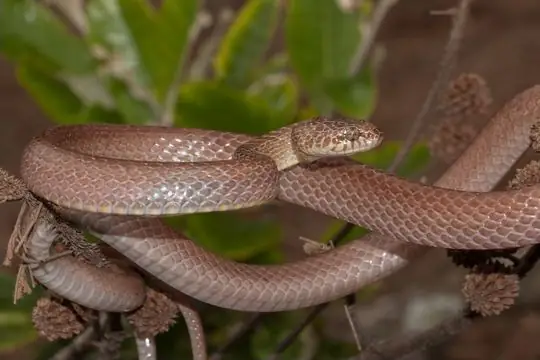
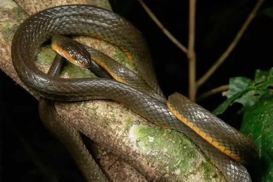
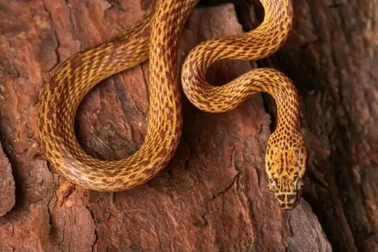
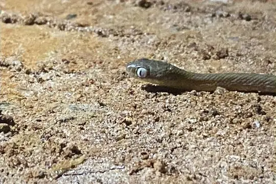

Dipsadoboa
The genus Dipsadoboa (family Colubridae) has 12 species in SnakeList (none venomous), recorded in 28 countries.
- 12species
- 12non-venomous
- 28countries
About the genus
A genus of the family Colubridae (colubrids).
Species
Showing 12 species

Cross-barred SnakeDipsadoboa aulica Günther's Green Tree SnakeDipsadoboa unicolor
Günther's Green Tree SnakeDipsadoboa unicolor- No photo yetKageler’s Tree SnakeDipsadoboa kageleri
 Laurent’s Green Tree-snakeDipsadoboa viridis
Laurent’s Green Tree-snakeDipsadoboa viridis
Montane Forest Tree SnakeDipsadoboa montisilva
Northern Marbled Nocturnal Tree SnakeDipsadoboa flavida Short-snouted Tree SnakeDipsadoboa brevirostris
Short-snouted Tree SnakeDipsadoboa brevirostris Shreve's Tree SnakeDipsadoboa shrevei
Shreve's Tree SnakeDipsadoboa shrevei Underwood's Tree SnakeDipsadoboa underwoodi
Underwood's Tree SnakeDipsadoboa underwoodi Weiler's Tree SnakeDipsadoboa weileri
Weiler's Tree SnakeDipsadoboa weileri
Werner's Green Tree SnakeDipsadoboa werneri Yabassi Tree SnakeDipsadoboa duchesnii
Yabassi Tree SnakeDipsadoboa duchesnii
No snakes in Dipsadoboa match.
About the genus Dipsadoboa
- Family: Colubridae.
- Recorded in: Angola, Benin, Burundi, Cameroon, Central African Republic, Democratic Republic of the Congo, Equatorial Guinea, Eswatini, Gabon, Ghana, Guinea, Ivory Coast, Kenya, Liberia, Malawi, Mozambique, Nigeria, Republic of the Congo, Rwanda, Sierra Leone, Somalia, South Africa, South Sudan, Tanzania, Togo, Uganda, Zambia, Zimbabwe.